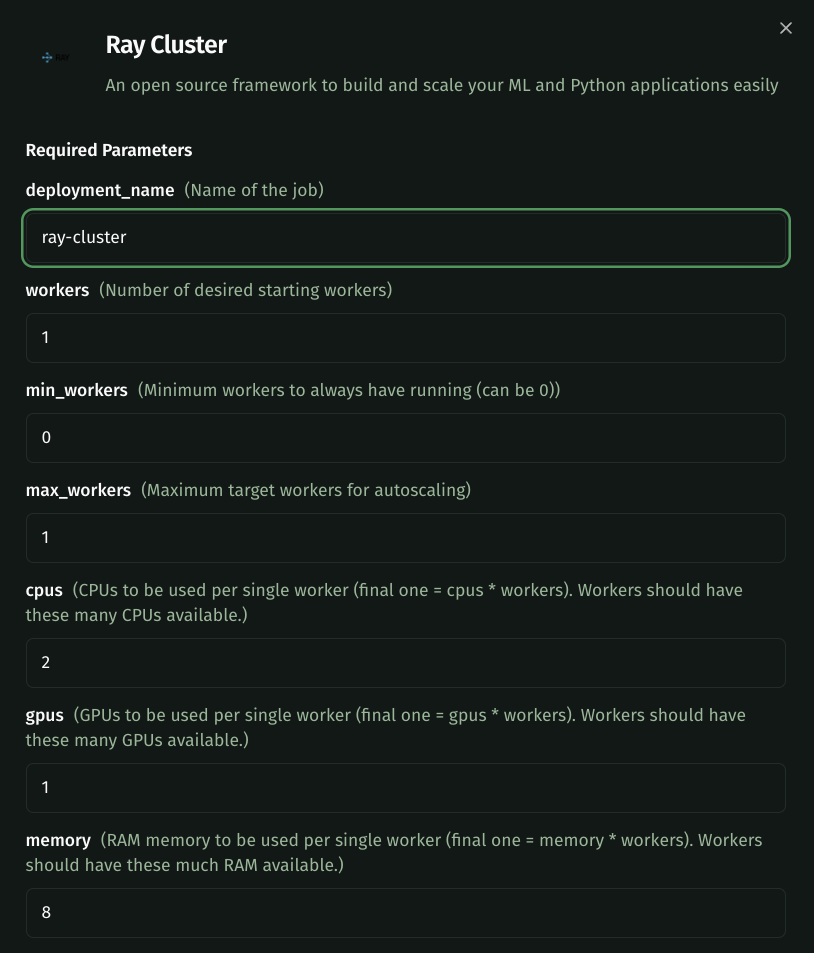
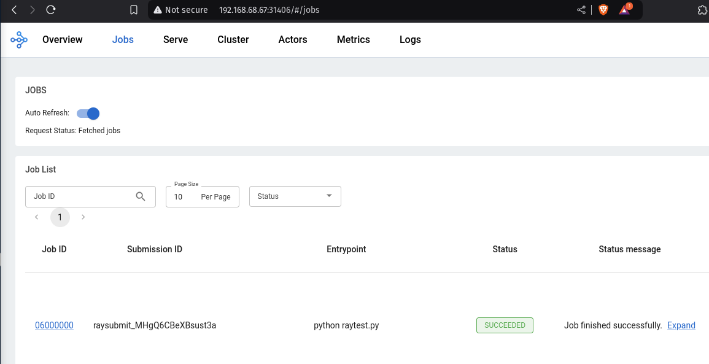

Beta access only. Register your interest here
Ray in Kalavai
Create, manage and deploy Ray workloads in Kalavai without touching infrastructure.
What is Ray?
Ray is a distributed framework for scaling Python and ML workloads. Kalavai’s managed Ray clusters let you launch distributed training or inference tasks without setting up or managing nodes.
Platform features:
- Create Ray clusters that autoscale to your needs without dealing with infrastructure
- Highly configurable (python version, CUDA kernels, node capabilities)
- Flexible and affordable access to thousands of data centre-level GPUs
Getting Started
Log in to your Kalavai account and navigate to the Clusters page. This section allows you to create, manage and connect to your GPU clusters.

As long as you are within your resource quota (as indicated under Available Resources) you can create as many clusters as you need --even multiple of the same type. You can create a cluster by selecting any of the supported templates (growing!) under the Create new Cluster section.
Create a Ray cluster
Select Ray Cluster on the list of cluster templates to configure your Ray cluster.

Configuring your Ray cluster
The Ray template allows you to configure your cluster instance to your needs.

Here's a list of key parameters:
workers(default:1, required): Number of desired starting workersmin_workers(default:1, required): Minimum desired workers for autoscalingmax_workers(default:1, required): Maximum workers for autoscalingcpus(default:2, optional): CPUs to be used per single worker (final one = cpus * workers). Workers should have these many CPUs available.gpus(default:1, optional): GPUs to be used per single worker (final one = gpus * workers). Workers should have these many GPUs available.memory(default:8, optional): RAM memory to be used per single worker (final one = memory * workers). Workers should have this much RAM available.cuda_gpu_mem_percentage(default:100, optional): Maximum memory fraction allowed to be used from the GPU vRAM.ray_version(default:"2.49.0", optional): Ray version to use in the clusterpython_version(default:"312", optional): Python version to use in the cluster (39, 310, 311, 312)cuda_version(default:"cu124", optional): CUDA version to use in the cluster (cu117 to cu128)upscaling_mode(default:"Default", optional): Defines autoscale mode. One of: Conservative, Default or Aggressive. More infoidle_timeout_seconds(default:60, optional): Defines the waiting time in seconds before scaling down an idle worker pod. More info
When you are ready, click on Deploy Cluster. The Ray instance may take a few minutes to spin up. Check the status of the pool under Your clusters.

Example: Autoscalable cluster
Autoscalable clusters are ideal to keep cost under control. You can set up a no-GPU cluster that autoscales on demand to up to 10 GPUs based on your workloads. To do so, here are the parameters you can use:
workers: 0min_workers: 0max_workers: 10idle_time_out: 120
With this configuration, you get a 0 GPUs cluster that scales up to 10 GPUs when you send demand to it. Once the demand ceases, each idle worker scales down itself after 120 seconds.
Connecting to your cluster
Once the status of the cluster is Ready you are ready to put the instance to work. Each Ray cluster exposes a list of endpoints:
GCS: Global Control Store, Coordinates communication between the head node and worker nodes.Dashboard: Provides a web-based monitoring interface for the Ray cluster.Client: Allows external Python clients (e.g., from your laptop) to connect remotely to a running Ray cluster. Used to connect remotely to your cluster withray.init(address=ray://<address>). Make sure you do not usehttp://within the address and use theray://protocol.Serve: The HTTP entrypoint for Ray Serve, which is Ray’s model serving layer.
Python example
To run Ray in python locally and connect to your cluster, first install a matching version of ray library:
pip install ray[default]==2.49.0 # <-- should match the version on your cluster
Connect directly from python
# Name: test.py
import ray
ray.init("<client endpoint>")
@ray.remote
def f(x):
return x * x
futures = [f.remote(i) for i in range(2)]
print(ray.get(futures)) # [0, 1]
And execute it locally:
python test.py
Note that your local python version must match that of the cluster. If you want to wave this restriction, use the submission route below.
Submit script to your cluster
We need to create a python script, put it in its own working folder, then submit it to our cluster.
Create a raytest.py script and place it under raytest/ folder:
import ray
ray.init()
@ray.remote
def f(x):
return x * x
futures = [f.remote(i) for i in range(2)]
print(ray.get(futures)) # [0, 1]
The folder structure should look as follows:
raytest/
|
|---raytest.py
Now submit your job using the dashboard endpoint in your Ray cluster as address.
ray job submit --working-dir ./raytest --address <dashboard endpoint> -- python raytest.py
You should see the output in the console, and can also inspect the job progress by visiting the dashboard endpoint in your browser, under Jobs

What next
Ray official documentation and examples.
FAQs
ValueError: Error initializing torch.distributed using env:// rendezvous: environment variable MASTER_ADDR expected, but not set
When using PyTorch Distributed (torch.distributed) with backend env://, MASTER_ADDR and MASTER_PORT must be set manually.
You can set both environment variables by passing them with your Ray Job:
ray job submit --runtime-env-json='{"env_vars": {"MASTER_ADDR": "127.0.0.1", "MASTER_PORT": "29500"}}' -- <endpoint command>
or if using Python:
job_id = client.submit_job(
entrypoint="<endpoint command>",
submission_id="my_training_1",
runtime_env={
"env_vars": {
"MASTER_ADDR": "127.0.0.1", "MASTER_PORT": "29500"
}
}
)
PyTorch distributed is used in plain PyTorch DDP, HuggingFace accelerate, DeepSpeed and any code that calls:
torch.distributed.init_process_group("nccl", init_method="env://")